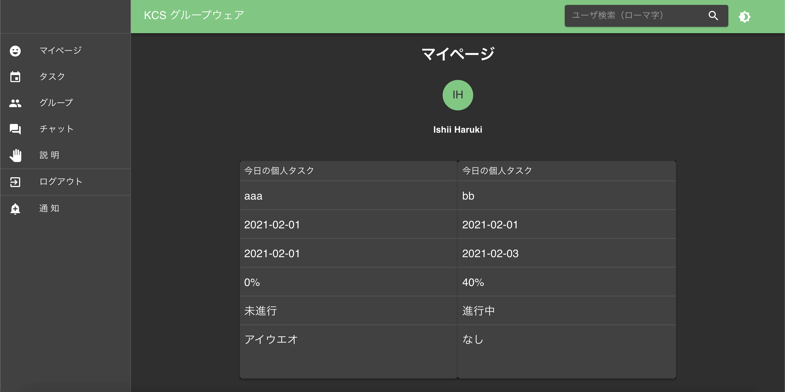
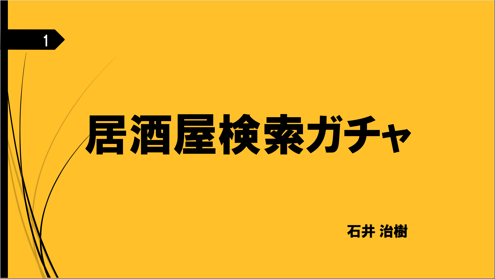

ABOUT
これまで作った作品、開発に携わった作品を紹介したいと思います。
(自分で作った作品について公開をしておりませんのでご了承ください。)
KCSグループウェア
居酒屋検索アプリ
温泉・焼肉検索アプリ
React・Typescriptソースコード Springソースコード【クラウドワークスで受注したお仕事】
Q＆Aサイト
React + Redux + Firebaseを使って学習用Q＆Aのサイトの構築に携わりました。
バイカー向けマッチングアプリ
Laravel + React + MySQLでチャット機能の開発に携わりました。
既存のWebサイトのフォーム修正作業
PHPにJavascriptを実装して、ページ遷移のないバリデーションチェックを入れました。
【日々の業務の自動化】
Zoom自動立ち上げ機能
研修のZoomのURLが変わらないのでPythonとcronを使って
定期実行をして会議参加の自動化を行っております。遅刻防止になります笑
日報自動書き込みシステム
Python, openpyxl, LibreOfficeを使って特定のメモ帳から
文章を取得して、エクセルの日付に該当する行に書き込みができます。
（要望等があればNote記事等に書き残していければなと思っています。）
これからについて
自分の得意言語がReact, Laravelなのでその言語で仕事を獲得できるようにしたい。
また、スマートフォンアプリの開発にも興味を持っています。
現在、SwiftとFlutterについて調査・学習を進めております。
お仕事等のご依頼がありましたら下のCONTACTよりよろしくお願いいたします。